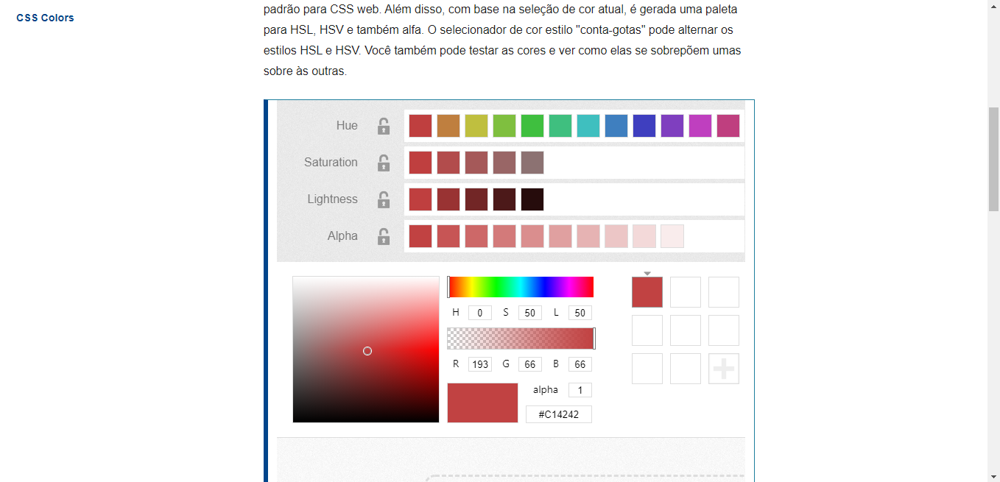
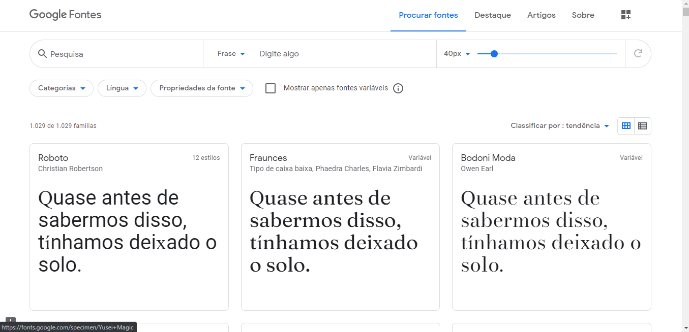

Aqui nesse passo a passo iremos te mostrar como é o desenvolvimento de um site feito com as tecnologias html e css.
caso você queira algo mais técnico e especifico de cada parte do desenvolvimento web
Você pode visitar minha biblioteca onde fica todo meu conhecimento bem claro sobre cada parte do desenvolvimento web clicando aqui
Ou você pode visitar a documentação da MDN mozila clicando aqui, lá é você vai encontrar praticamente tudo o que precisa, eu recomendo mais, pois em minha biblioteca não é completo
Passo a passo
Primeira coisa que deve ser feito antes de começar a programação de fato é o rascunho dele, e também tem que pensar em algumas coisas como...
- Sobre o que é seu site?
- Quais informações você quer transmitir ao seu site?
- Como será seu site?
Respondendo a essas perguntas, você terá a ideia sobre seu site, a partir da ae estará preparado para o proximo passo
Rascunho
Existe duas forma que conheço para rascunhar seu site, uma é pegando lápis e papel e desenhando, e outra é usando uma ferramenta digital chamada Adobe XD
Mas a segunda opção você terá que aprender a usar a ferramenta, isso deixaremos para um outro post
Vamos ao jeito tradicional!!!

Não tem segredo, basta pegar uma folha e lápis e desenhar a estrutura de seu site, pode ser igual a dessa imagem, é importante começar pequeno
As cores do seu site você pode pegar clicando nessa imagem, onde será redirecionado a um site, um seletor de cores
A fonte você pode pegar clicando na imagem
